vignettes/Area_Based_Approach_SLV.Rmd
Area_Based_Approach_SLV.RmdMany critical policy decisions, from strategic investments to the allocation of humanitarian aid, rely on data about the geographic distribution of wealth and poverty.
As explained in a dedicated paper, the Relative Wealth Index estimates are built by applying machine learning algorithms to vast and heterogeneous data from satellites, mobile phone networks, topographic maps, as well as aggregated and de-identified connectivity data from Facebook.
As described in the this tutorial
Determine which administrative unit contains the centroid of each RWI tile
Calculate the bing tile quadkey at zoom level 14 for each point in the population density dataset and sum the population per level 14 tile
Determine which zoom level 14 (~2.4km bing tile) corresponds to each of the smaller 30m population density tiles, and calculate the sum of population within each zoom level 14 tile.
Calculate the total population in each administrative region using the population density dataset
Calculate a population derived weight for each zoom level 14 RWI tile
Use the weight value to calculate a weighted RWI value and aggregate to the administrative unit level
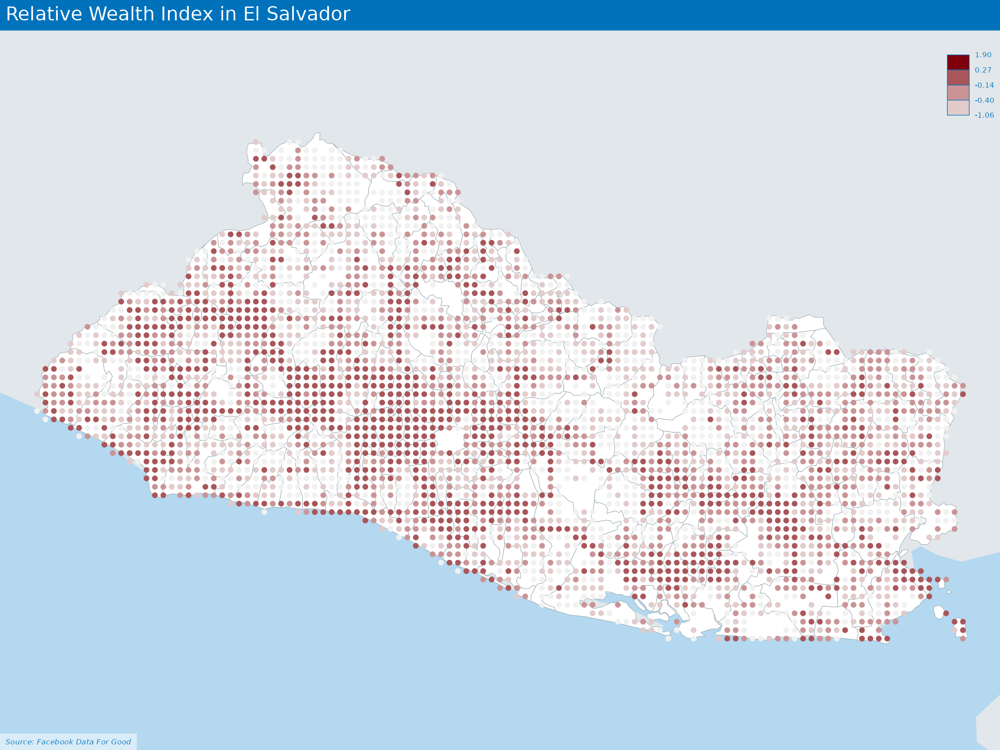
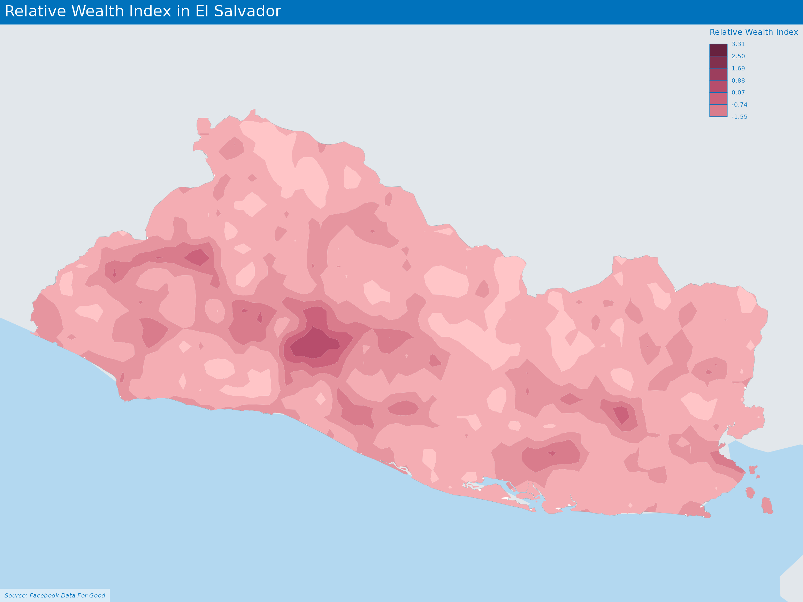
Historic Agricultural Drought Frequency Maps depict the frequency of severe drought in areas where 30 percent/50 percent of the cropland has been affected. The historical frequency of severe droughts (as defined by ASI) is based on the entire ASI times series (1984-2020).
The polarity of a sub-indicator is the sign of the relationship between the indicator and the phenomenon to be measured (e.g., in a well-being index, “GDP per capita” has ‘positive’ polarity and “Unemployment rate” has ‘negative’ polarity). In this case, we have 2 options for such directional adjustments:
This component is accounted for during the normalization process below.
Data Normalization allows for Adjustments of distribution (similar range of variation) and scale (common scale) of sub-indicators that may reflect different units of measurement and different ranges of variation.
Due to the structure of the indicators, distinct approaches of normalization shall be considered in order to avoid having zero value that would create issues for geometric means aggregation. Different normalization methods are available through the function normalise_ci and lead to different results:
A z-score approach method = 1 (Imposes a distribution with mean zero and variance 1). Standardized scores which are below average will become negative, implying that further geometric aggregation will be prevented.
A min-max approach method = 2 (same range of variation [0,1]) but not same variance).This method is very sensitive to extreme values / outliers
A ranking method method = 3. Scores are replaced by ranks – e.g. the highest score receives the first ranking position (rank 1).
Data Normalization allows for Adjustments of distribution (similar range of variation) and scale (common scale) of sub-indicators that may reflect different units of measurement and different ranges of variation.
Due to the structure of the indicators, distinct approaches of normalization shall be considered in order to avoid having zero value that would create issues for geometric means aggregation. Different normalization methods are available through the function normalise_ci and lead to different results:
A z-score approach method = 1 (Imposes a distribution with mean zero and variance 1). Standardized scores which are below average will become negative, implying that further geometric aggregation will be prevented.
A min-max approach method = 2 (same range of variation [0,1]) but not same variance).This method is very sensitive to extreme values/outliers
A ranking method method = 3. Scores are replaced by ranks – e.g. the highest score receives the first ranking position (rank 1).
The investigation of the structure of simple indicators can be done by means of correlation analysis.
We will check such correlation first within each dimension, using the ggcorrplot package. An alternative approach to better visualize correlation between indicators is to represent them through a network with the ggpraph package.
’ 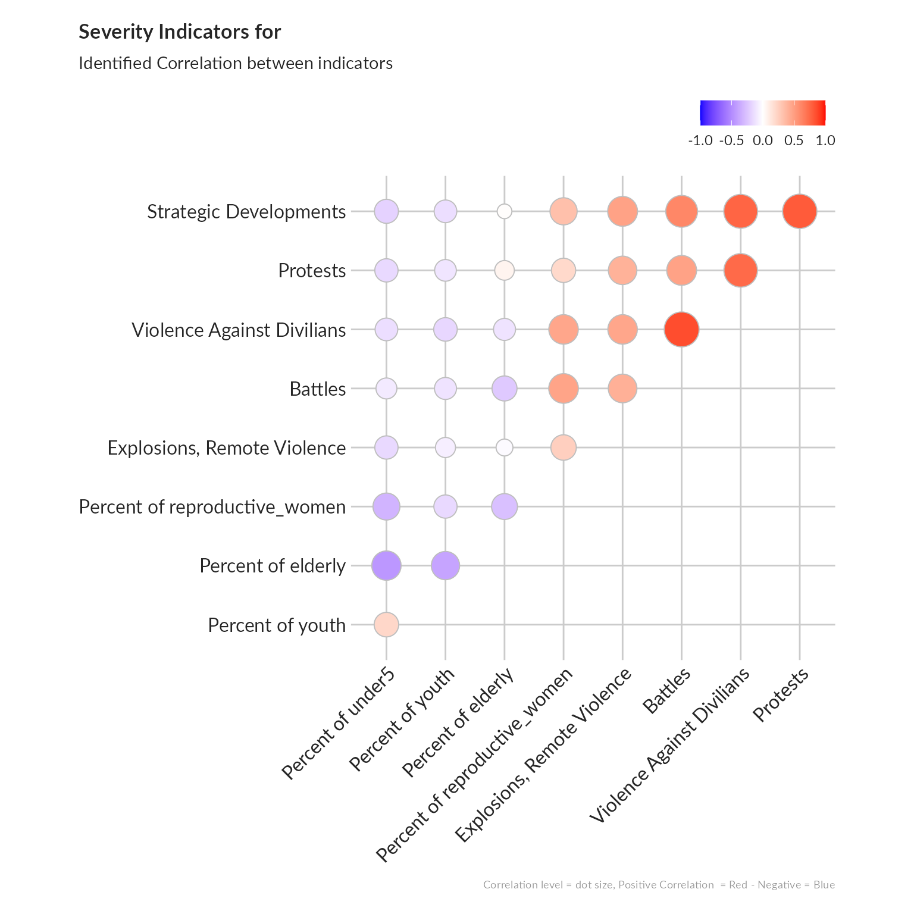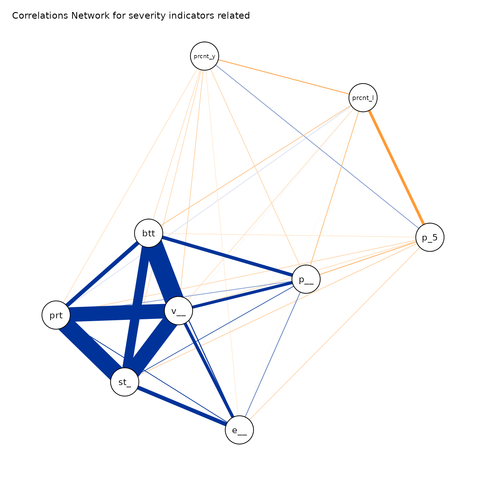
#> From To Weight
#> 1 --- 2 -0.45
#> 1 --- 3 -0.27
#> 2 --- 3 -0.32
#> 1 --- 4 -0.39
#> 2 --- 4 0.21
#> 3 --- 4 -0.16
#> 1 --- 5 -0.23
#> 2 --- 5 -0.09
#> 3 --- 5 0.47
#> 4 --- 5 -0.12
#> 1 --- 6 -0.02
#> 2 --- 6 -0.16
#> 3 --- 6 0.25
#> 4 --- 6 -0.07
#> 5 --- 6 0.41
#> 1 --- 7 0.06
#> 2 --- 7 -0.16
#> 3 --- 7 0.2
#> 4 --- 7 -0.11
#> 5 --- 7 0.48
#> 6 --- 7 0.4
#> 1 --- 8 0.01
#> 2 --- 8 -0.19
#> 3 --- 8 0.33
#> 4 --- 8 -0.14
#> 5 --- 8 0.61
#> 6 --- 8 0.48
#> 7 --- 8 0.8
#> 1 --- 9 -0.12
#> 2 --- 9 -0.14
#> 3 --- 9 0.46
#> 4 --- 9 -0.17
#> 5 --- 9 0.85
#> 6 --- 9 0.46
#> 7 --- 9 0.74
#> 8 --- 9 0.76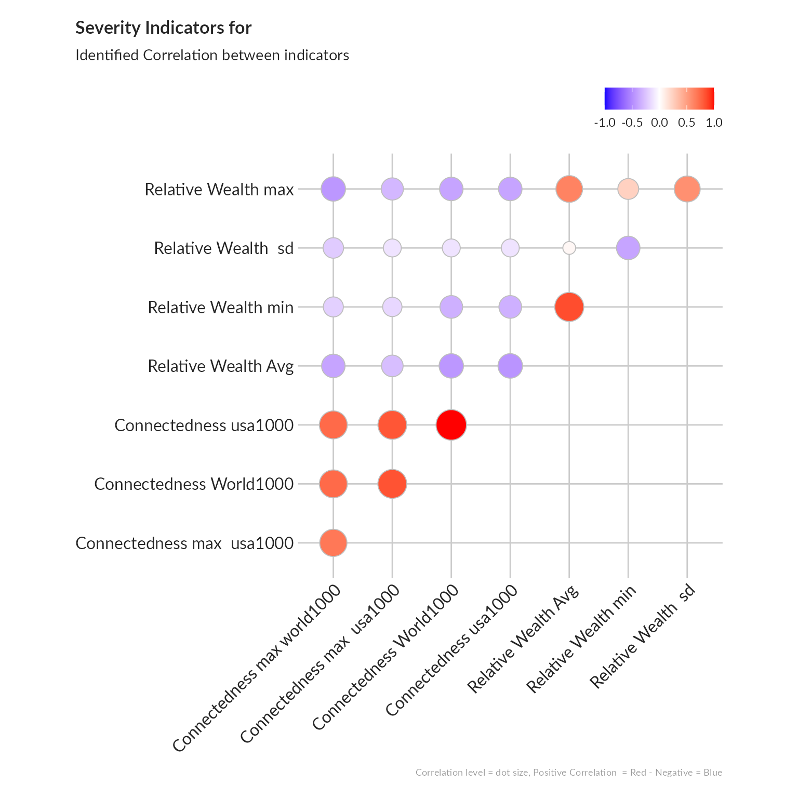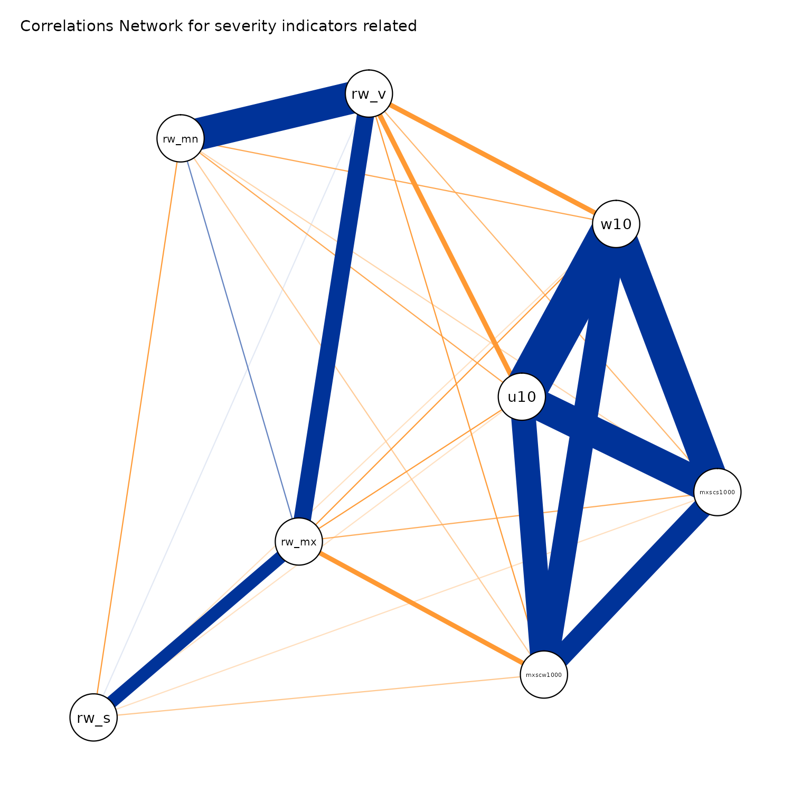
#> From To Weight
#> 1 --- 2 0.74
#> 1 --- 3 1
#> 2 --- 3 0.74
#> 1 --- 4 0.83
#> 2 --- 4 0.68
#> 3 --- 4 0.82
#> 1 --- 5 -0.45
#> 2 --- 5 -0.39
#> 3 --- 5 -0.46
#> 4 --- 5 -0.28
#> 1 --- 6 -0.12
#> 2 --- 6 -0.22
#> 3 --- 6 -0.12
#> 4 --- 6 -0.12
#> 5 --- 6 0.04
#> 1 --- 7 -0.39
#> 2 --- 7 -0.45
#> 3 --- 7 -0.39
#> 4 --- 7 -0.31
#> 5 --- 7 0.63
#> 6 --- 7 0.57
#> 1 --- 8 -0.34
#> 2 --- 8 -0.2
#> 3 --- 8 -0.34
#> 4 --- 8 -0.17
#> 5 --- 8 0.85
#> 6 --- 8 -0.39
#> 7 --- 8 0.24Cronbach’s alpha, (or coefficient alpha), developed by Lee Cronbach in 1951, measures reliability (i.e. how well a test measures what it should: measure of the stability of test scores), or internal consistency.
As a rule of thumbs, a score of more than 0.7 indicates an acceptable level of consistency:
’
The Cronbach Alpha measure of consistency for this combination of indicators is 0.85
.For weighting, the main issue to address is related to the concept of compensability. Namely the question is to know to what extent can we accept that the high score of an indicator go to compensate the low score of another indicator? This problem of compensability is intertwined with the issue of attribution of weights for each sub-indicator in order to calculate the final aggregation.
We can foresee that using “equal weight” (all indicators account for the same in the final index) and “arithmetic aggregation” (all indicators are substituable) is unlikely to depict the complex issue of Humanitarian Severity and is likely to comes with the risk of misrepresenting the reality.
Various methods are available within the Compind package are described below. This R package is also available through a ShinyApp. We will then share the code to use them based on our example.
This method is the application of Data Envelopment Analysis (DEA) to the field of composite indicators. It was originally proposed by Melyn and Moesen (1991) to evaluate macroeconomic performance. ACAPS has prepared an excellent note on The use of data envelopment analysis to calculate priority scores in needs assessments.
BoD approach offers several advantages:
Weights are endogenously determined by the observed performances and benchmark is not based on theoretical bounds, but it’s a linear combination of the observed best performances.
Principle is easy to communicate: since we are not sure about the right weights, we look for ”benefit of the doubt” weights (such that your overall relative performance index is as high as possible).
Directional Benefit of the Doubt (D-BoD) model enhances non-compensatory property by introducing directional penalties in a standard BoD model in order to consider the preference structure among simple indicators. This method is described in the article Enhancing non compensatory composite indicators: a directional proposal.
This method is the robust version of the BoD method. It is based on the concept of the expected minimum input function of order-m so “in place of looking for the lower boundary of the support of F, as was typically the case for the full-frontier (DEA or FDH), the order-m efficiency score can be viewed as the expectation of the maximal score, when compared to m units randomly drawn from the population of units presenting a greater level of simple indicators”, Daraio and Simar (2005). This method is described with more detail in the article Robust weighted composite indicators by means of frontier methods with an application to European infrastructure endowment.
This method groups together simple indicators to estimate a composite indicator that captures as much as possible of the information common to individual indicators.
This method is an intermediate case between arithmetic mean, according to which no unbalance is penalized, and min function, according to which the penalization is maximum. It depends on two parameters that are respectively related to the intensity of penalization of unbalance (alpha) and intensity of complementarity (beta) among indicators. “An unbalance adjustment method for development indicators”
This method uses the geometric mean to aggregate the single indicators and therefore allows to bypass the full compensability hypothesis using geometric mean. Two weighting criteria are possible: EQUAL: equal weighting and BOD: Benefit-of-the-Doubt weights following the Puyenbroeck and Rogge (2017) approach.
This method is is a non-linear composite index method which transforms a set of individual indicators in standardized variables and summarizes them using an arithmetic mean adjusted by a “penalty” coefficient related to the variability of each unit (method of the coefficient of variation penalty).
This last method (also known as the dendric method), originally developed at the University of Wroclaw, is based on the distance from a theoretical unit characterized by the best performance for all indicators considered; the composite indicator is therefore based on the sum of euclidean distances from the ideal unit and normalized by a measure of variability of these distance (mean + 2*std).
As we can see some of the potential aggregation algorithm are not providing results from some location. We will therefore exclude them from the rest of the analysis.
The various Index can be normalised again on a 0 to 1 scale in order to be compared. A specific treatment if necessary for index based on Factor analysis
Let’s write this back to the excel doc
We can now build a visualization for the comparison between different valid methods.
As we can see, the final ranking for each location is very sensitive to the methods.
An approach to select the method can be to identify, average ranks per method in order to identify the method that is getting closer this average ranks.
we can first visualise those average ranks.
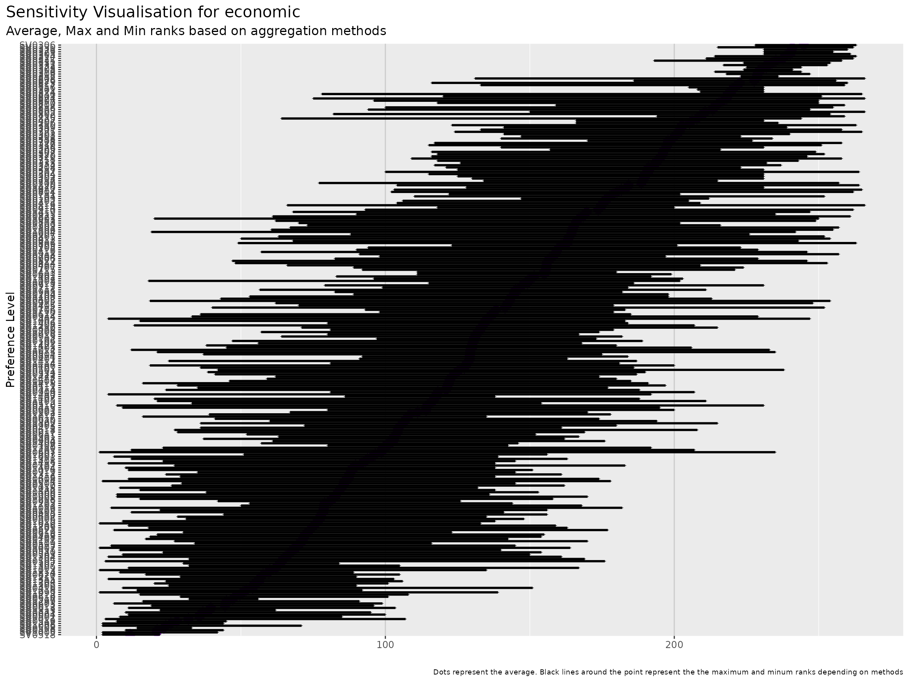
Next is to compute standard deviation for each method.
Social:
Population Dependency Ratio (Facebook)
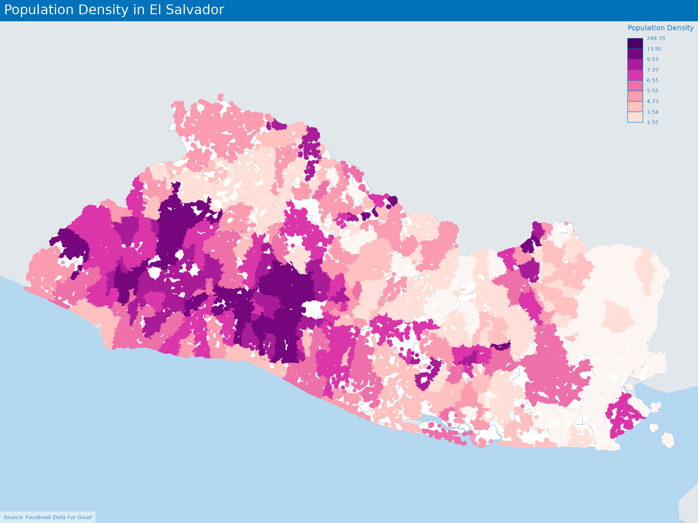
Population movement range
The Movement Range data sets is intended to inform on how populations are responding to physical distancing measures. In particular, there are two metrics that provide a slightly different perspective on movement trends:
Change in Movement: looks at how much people are moving around and compares it with a baseline period that predates most social distancing measures. The idea is to understand how much less people are moving around since the onset of the coronavirus epidemic. This is done by quantifying how much people move around by counting the number of level-16 Bing tiles (which are approximately 600 meters by 600 meters in area at the equator) they are seen in within a day. In the dataset noted
all_day_bing_tiles_visited_relative_changeStay Put: looks at the fraction of the population that appear to stay within a small area during an entire day. This metric intends to measure this by calculating the percentage of eligible people who are only observed in a single level-16 Bing tile during the course of a day. In the dataset noted
all_day_ratio_single_tile_users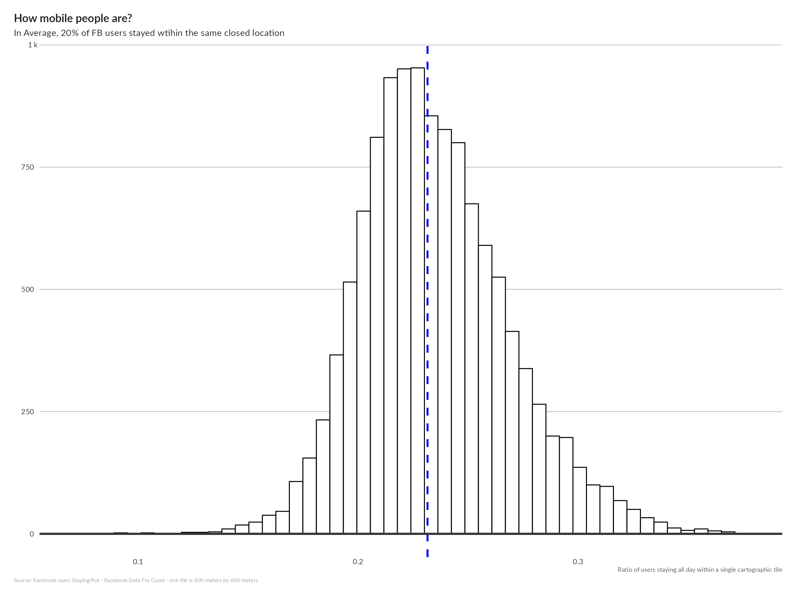
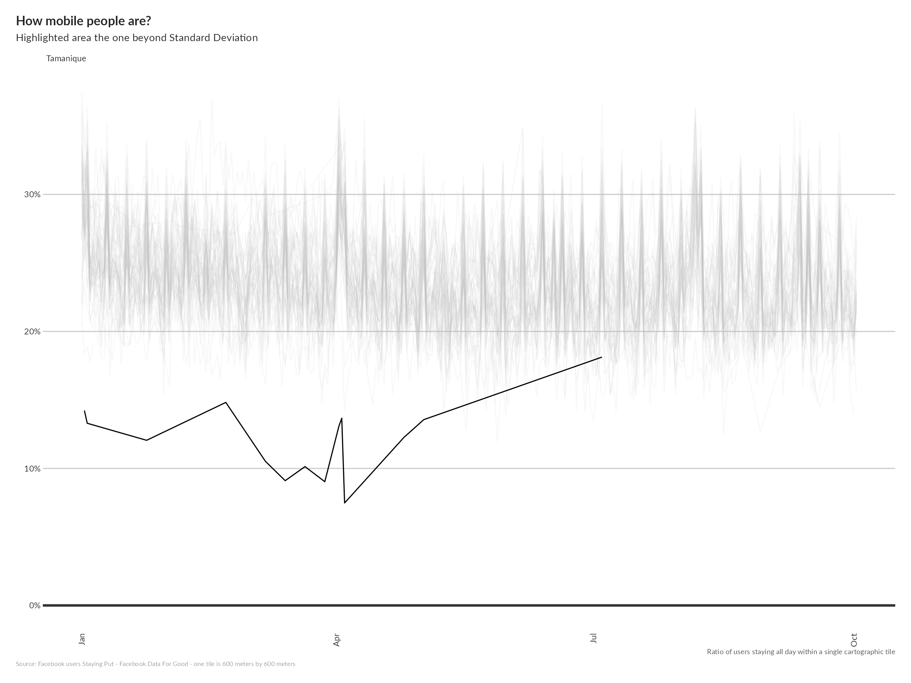
Violence
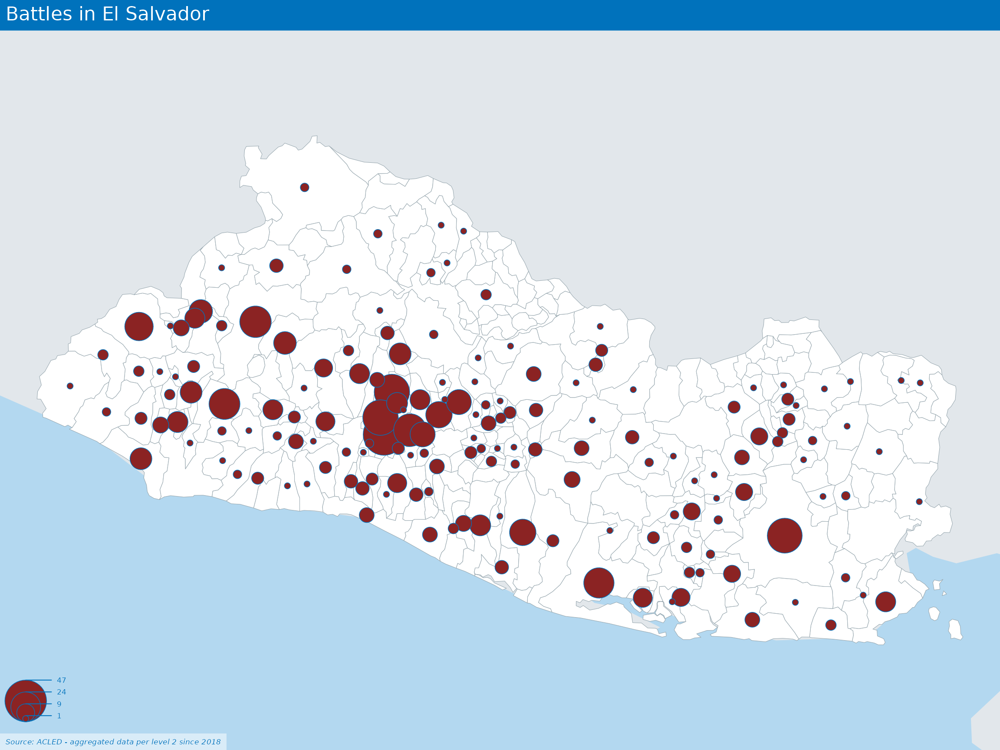
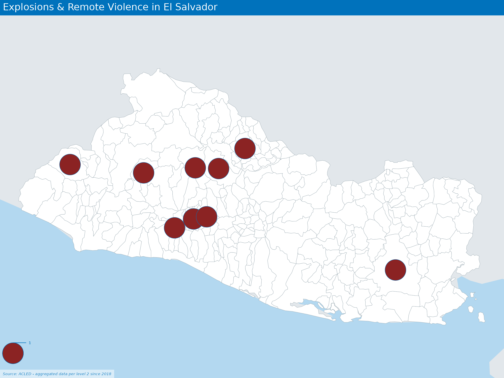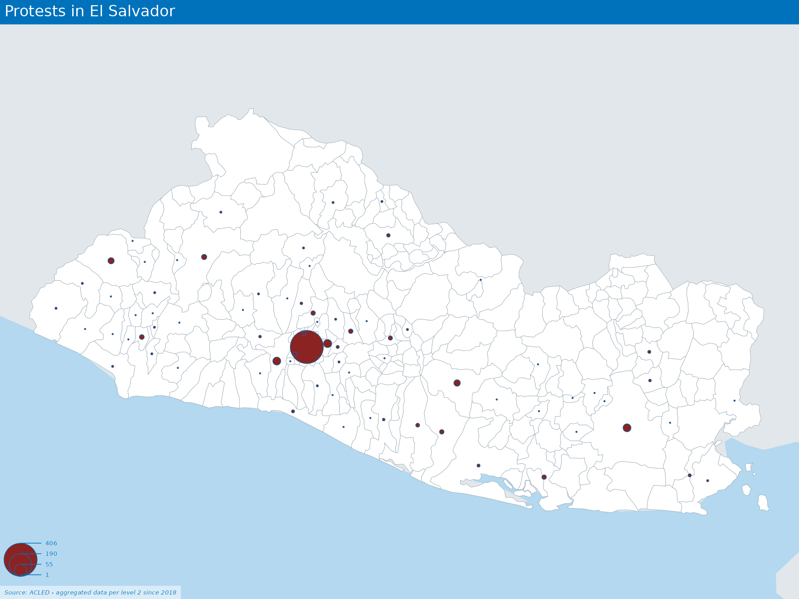
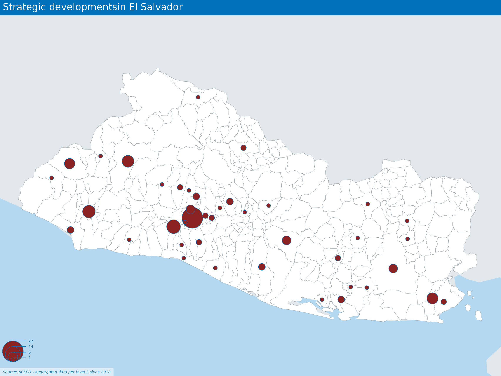
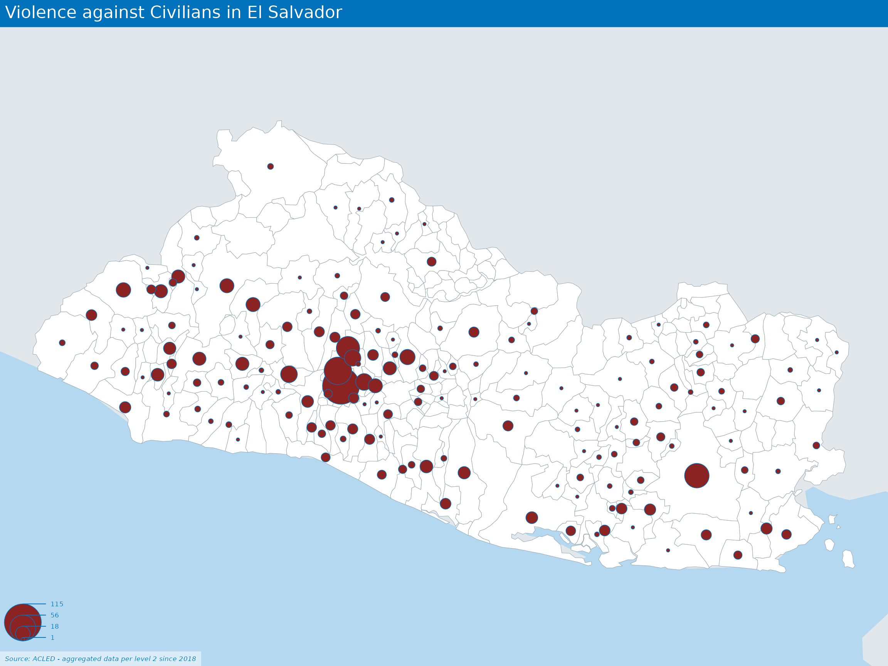
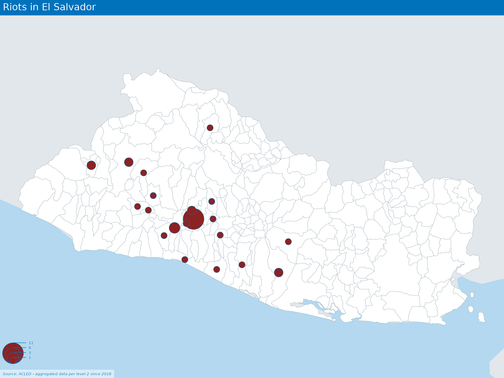